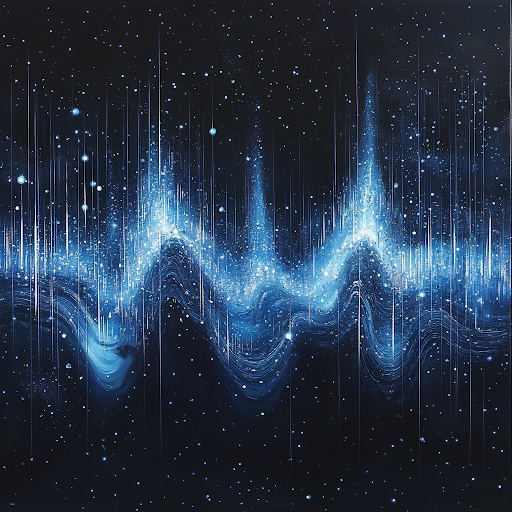

<!DOCTYPE html>
<html>
  <head>
    <script src="jspsych-6.3.1/jspsych.js"></script>
    <script src="jspsych-6.3.1/plugins/jspsych-survey-likert.js"></script>
    <script src="jspsych-6.3.1/plugins/jspsych-html-keyboard-response.js"></script>
    <script src="jspsych-6.3.1/plugins/jspsych-survey-text.js"></script>
    <script src="jspsych-6.3.1/plugins/jspsych-survey-html-form.js"></script>
    <script src="jspsych-6.3.1/plugins/jspsych-survey-multi-choice.js"></script>

    <link rel="stylesheet" href="jspsych-6.3.1/css/jspsych.css">
  </head>
  <body>
    <script>
      /* experiment parameters */
      var FIXATION_DURATION = 500;
      var string_num = 1;
      var NUM_TRIALS = string_num * 4;

      /* create a subject ID */
      var subjectID =
        "SUBJ_" + Date.now() + "_" + Math.floor(Math.random() * 1000);

      /* create cover story with quadrants integrated */
      var coverStoryTexts = [
        `<h2>Instructions</h2>
        
        <p>Imagine you are living in the future where humanity explores the stars using spaceships. You are a space rescuer whose job is to search for astronauts lost in deep space. Our fleet of spaceships is equipped with radio transmitters, which can be operated by astronauts in case they need rescue.</p>`,

        `
        <p>Exploring space is dangerous, and sometimes astronauts need to get help from others to survive. To call for help, astronauts use a transmitter to send out radio waves. As energy is limited during emergencies, the transmitter can only send binary sequences: a list of 0s and 1s.</p>`,

        `
        <p>Due to energy limitations, radio receivers can only detect 10 digits per signal.</p>
        <p>There are also natural cosmic phenomena that affect the same radio waves. If radio waves are generated from cosmic phenomena, then 0s and 1s are equally likely to appear. On the other hand, when radio waves are created by astronauts, 0s and 1s can occur in any pattern desired by the astronauts.</p>`,

        `
        <p>As you travel through space, you will monitor different quadrants where astronauts may be in need of rescue. Each quadrant has unique characteristics that may affect the astronauts' ability to send distress signals.</p>
        <p>If you receive a sequence and think it was produced by natural phenomena, you will ignore it and stay on course. If you think it came from humans, then we will send a rescue team.</p>`,

        `
        <p>In this study, you will see several sequences from different quadrants. Before each set of sequences, you will receive information about the quadrant you are currently monitoring.</p>
        <p>Your task is to decide how likely each sequence was generated by a natural phenomenon or by a human astronaut. Please answer as quickly and accurately as possible!</p>`,
      ];

      /* add page numbers to instruction screens */
      var coverStoryScreens = coverStoryTexts.map(function (text, index) {
        return {
          type: "html-keyboard-response",
          stimulus:
            text +
            '<p>Press any key to continue.</p>' +
            '<div style="position: absolute; bottom: 0; right: 0;">Page ' +
            (index + 1) +
            " of " +
            coverStoryTexts.length +
            "</div>",
        };
      });

      /* create fixation */
      var fixation = {
        type: 'html-keyboard-response',
        stimulus: '<p style="font-size: 48px; font-family: monospace;">+</p>',
        choices: jsPsych.NO_KEYS,
        trial_duration: FIXATION_DURATION
      };

      /* numpool variable (unchanged) */
      var numpool = [{"00000000":"00000001"},{"00000000":"00000010"},{"00000000":"00000011"},{"00000000":"00000100"},{"00000000":"00000101"},{"00000000":"00000110"},{"00000000":"00000111"},{"00000000":"00001000"},{"00000000":"00001001"},{"00000000":"00001010"},{"00000000":"00001011"},{"00000000":"00001100"},{"00000000":"00001101"},{"00000000":"00001110"},{"00000000":"00001111"},{"00000000":"00010000"},{"00000000":"00010001"},{"00000000":"00010010"},{"00000000":"00010011"},{"00000000":"00010100"},{"00000000":"00010101"},{"00000000":"00010110"},{"00000000":"00010111"},{"00000000":"00011000"},{"00000000":"00011001"},{"00000000":"00011010"},{"00000000":"00011011"},{"00000000":"00011100"},{"00000000":"00011101"},{"00000000":"00011110"},{"00000000":"00011111"},{"00000000":"00100000"},{"00000000":"00100001"},{"00000000":"00100010"},{"00000000":"00100011"},{"00000000":"00100100"},{"00000000":"00100101"},{"00000000":"00100110"},{"00000000":"00100111"},{"00000000":"00101000"},{"00000000":"00101001"},{"00000000":"00101010"},{"00000000":"00101011"},{"00000000":"00101100"},{"00000000":"00101101"},{"00000000":"00101110"},{"00000000":"00101111"},{"00000000":"00110000"},{"00000000":"00110001"},{"00000000":"00110010"},{"00000000":"00110011"},{"00000000":"00110100"},{"00000000":"00110101"},{"00000000":"00110110"},{"00000000":"00110111"},{"00000000":"00111000"},{"00000000":"00111001"},{"00000000":"00111010"},{"00000000":"00111011"},{"00000000":"00111100"},{"00000000":"00111101"},{"00000000":"00111110"},{"00000000":"00111111"},{"00000000":"01000000"},{"00000000":"01000001"},{"00000000":"01000010"},{"00000000":"01000011"},{"00000000":"01000100"},{"00000000":"01000101"},{"00000000":"01000110"},{"00000000":"01000111"},{"00000000":"01001000"},{"00000000":"01001001"},{"00000000":"01001010"},{"00000000":"01001011"},{"00000000":"01001100"},{"00000000":"01001101"},{"00000000":"01001110"},{"00000000":"01001111"},{"00000000":"01010000"},{"00000000":"01010001"},{"00000000":"01010010"},{"00000000":"01010011"},{"00000000":"01010100"},{"00000000":"01010101"},{"00000000":"01010110"},{"00000000":"01010111"},{"00000000":"01011000"},{"00000000":"01011001"},{"00000000":"01011010"},{"00000000":"01011011"},{"00000000":"01011100"},{"00000000":"01011101"},{"00000000":"01011110"},{"00000000":"01011111"},{"00000000":"01100000"},{"00000000":"01100001"},{"00000000":"01100010"},{"00000000":"01100011"},{"00000000":"01100100"},{"00000000":"01100101"},{"00000000":"01100110"},{"00000000":"01100111"},{"00000000":"01101000"},{"00000000":"01101001"},{"00000000":"01101010"},{"00000000":"01101011"},{"00000000":"01101100"},{"00000000":"01101101"},{"00000000":"01101110"},{"00000000":"01101111"},{"00000000":"01110000"},{"00000000":"01110001"},{"00000000":"01110010"},{"00000000":"01110011"},{"00000000":"01110100"},{"00000000":"01110101"},{"00000000":"01110110"},{"00000000":"01110111"},{"00000000":"01111000"},{"00000000":"01111001"},{"00000000":"01111010"},{"00000000":"01111011"},{"00000000":"01111100"},{"00000000":"01111101"},{"00000000":"01111110"},{"00000000":"01111111"},{"00000000":"10000000"},{"00000000":"10000001"},{"00000000":"10000010"},{"00000000":"10000011"},{"00000000":"10000100"},{"00000000":"10000101"},{"00000000":"10000110"},{"00000000":"10000111"},{"00000000":"10001000"},{"00000000":"10001001"},{"00000000":"10001010"},{"00000000":"10001011"},{"00000000":"10001100"},{"00000000":"10001101"},{"00000000":"10001110"},{"00000000":"10001111"},{"00000000":"10010000"},{"00000000":"10010001"},{"00000000":"10010010"},{"00000000":"10010011"},{"00000000":"10010100"},{"00000000":"10010101"},{"00000000":"10010110"},{"00000000":"10010111"},{"00000000":"10011000"},{"00000000":"10011001"},{"00000000":"10011010"},{"00000000":"10011011"},{"00000000":"10011100"},{"00000000":"10011101"},{"00000000":"10011110"},{"00000000":"10011111"},{"00000000":"10100000"},{"00000000":"10100001"},{"00000000":"10100010"},{"00000000":"10100011"},{"00000000":"10100100"},{"00000000":"10100101"},{"00000000":"10100110"},{"00000000":"10100111"},{"00000000":"10101000"},{"00000000":"10101001"},{"00000000":"10101010"},{"00000000":"10101011"},{"00000000":"10101100"},{"00000000":"10101101"},{"00000000":"10101110"},{"00000000":"10101111"},{"00000000":"10110000"},{"00000000":"10110001"},{"00000000":"10110010"},{"00000000":"10110011"},{"00000000":"10110100"},{"00000000":"10110101"},{"00000000":"10110110"},{"00000000":"10110111"},{"00000000":"10111000"},{"00000000":"10111001"},{"00000000":"10111010"},{"00000000":"10111011"},{"00000000":"10111100"},{"00000000":"10111101"},{"00000000":"10111110"},{"00000000":"10111111"},{"00000000":"11000000"},{"00000000":"11000001"},{"00000000":"11000010"},{"00000000":"11000011"},{"00000000":"11000100"},{"00000000":"11000101"},{"00000000":"11000110"},{"00000000":"11000111"},{"00000000":"11001000"},{"00000000":"11001001"},{"00000000":"11001010"},{"00000000":"11001011"},{"00000000":"11001100"},{"00000000":"11001101"},{"00000000":"11001110"},{"00000000":"11001111"},{"00000000":"11010000"},{"00000000":"11010001"},{"00000000":"11010010"},{"00000000":"11010011"},{"00000000":"11010100"},{"00000000":"11010101"},{"00000000":"11010110"},{"00000000":"11010111"},{"00000000":"11011000"},{"00000000":"11011001"},{"00000000":"11011010"},{"00000000":"11011011"},{"00000000":"11011100"},{"00000000":"11011101"},{"00000000":"11011110"},{"00000000":"11011111"},{"00000000":"11100000"},{"00000000":"11100001"},{"00000000":"11100010"},{"00000000":"11100011"},{"00000000":"11100100"},{"00000000":"11100101"},{"00000000":"11100110"},{"00000000":"11100111"},{"00000000":"11101000"},{"00000000":"11101001"},{"00000000":"11101010"},{"00000000":"11101011"},{"00000000":"11101100"},{"00000000":"11101101"},{"00000000":"11101110"},{"00000000":"11101111"},{"00000000":"11110000"},{"00000000":"11110001"},{"00000000":"11110010"},{"00000000":"11110011"},{"00000000":"11110100"},{"00000000":"11110101"},{"00000000":"11110110"},{"00000000":"11110111"},{"00000000":"11111000"},{"00000000":"11111001"},{"00000000":"11111010"},{"00000000":"11111011"},{"00000000":"11111100"},{"00000000":"11111101"},{"00000000":"11111110"},{"00000000":"11111111"}];

      /* Randomly select trials without repetition */
      function getRandomTrials(array, numTrials) {
        var shuffledArray = array.slice().sort(function () {
          return 0.5 - Math.random();
        });
        return shuffledArray.slice(0, numTrials);
      }

      // Add cover story to main timeline
      var mainTimeline = [];

      coverStoryScreens.forEach(function (trial) {
        mainTimeline.push(trial);
      });

      var randomizedTrials = getRandomTrials(numpool, NUM_TRIALS);

      if (randomizedTrials === "00000000" || randomizedTrials === "11111111") {
        numpool.push({ "00000000": randomizedTrials });
      } else {
        for (let j = 0; j < 6; j++) {
          numpool.push({ "00000000": randomizedTrials });
        }
      }

      // Add progress bar
      var totalTrials = NUM_TRIALS * 4 + coverStoryScreens.length + 1; // Adjust as necessary

      /* Updated condition descriptions with corrected typos and adjustments */
      var conditionDescriptions = [
        // Index 0: Desire Present
        "You are now monitoring Quadrant 1. In this quadrant, astronauts are trained to be vigilant and to always accept help. When the emergency protocol is triggered, they will follow guidelines and send distress signals, as they very much want help to arrive.",

        // Index 1: Desire Absent (Adjusted)
        "You are now monitoring Quadrant 2. In this quadrant, astronauts are trained to be self-reliant and prefer to handle situations on their own. When the emergency protocol is triggered, they will follow guidelines and send distress signals but do not actively seek help to arrive.",

        // Index 2: Belief Present
        "You are now monitoring Quadrant 3. In this quadrant, astronauts have a detailed, up-to-date instruction manual for what to do in case of an emergency. As a result, the astronauts know that the signals should be non-random sequences since only then do the rescue ships recognize the sequences as a distress signal.",

        // Index 3: Belief Absent (Adjusted)
        "You are now monitoring Quadrant 4. In this quadrant, astronauts have an instruction manual for emergencies, but it lacks crucial information about cosmic phenomena. As a result, the astronauts do not realize that random sequences of signals can be confused with naturally occurring cosmic signals, and that they need to send non-random sequences to be recognized as distress signals by rescue ships.",

        // Index 4: Skill Present
        "You are now monitoring Quadrant 5. In this quadrant, each member of the team is well-trained to use the transmission equipment. Even though the equipment can be difficult to operate in zero gravity and while wearing bulky gloves, the astronauts are highly skilled at executing the radio transmissions they want to send.",

        // Index 5: Skill Absent
        "You are now monitoring Quadrant 6. In this quadrant, no member of the team has been trained to use the transmission equipment. The equipment can be difficult to operate in zero gravity and while wearing bulky gloves, so the astronauts are often unable to execute the radio transmissions they want to send.",

        // Index 6: Awareness Present
        "You are now monitoring Quadrant 7. In this quadrant, one of the reasons why a distress signal may be triggered is because of a life support malfunction. To stay fully conscious, astronauts are equipped with oxygen tanks. As a result, when they are sending a radio transmission, they are fully aware of what they are doing.",

        // Index 7: Awareness Absent
        "You are now monitoring Quadrant 8. In this quadrant, one of the reasons why a distress signal may be triggered is because of a life support malfunction. In such a state, astronauts will often drift in and out of consciousness. As a result, when they are sending a radio transmission, they may not be fully aware of what they are doing.",
      ];

      /* Updated comprehension questions matching the stories */
      var comprehensionQuestions = [
        // Index 0: Desire Present
        [
          {
            prompt:
              "True or False: In this quadrant, astronauts desire to receive help and actively want help to arrive when they send a distress signal.",
            correct: "True",
          },
          {
            prompt:
              "True or False: You would expect astronauts in this quadrant to disregard guidelines when they encounter an emergency.",
            correct: "False",
          },
        ],

        // Index 1: Desire Absent
        [
          {
            prompt:
              "True or False: Astronauts in this quadrant prefer to handle situations on their own and do not actively seek help when an emergency protocol is triggered.",
            correct: "True",
          },
          {
            prompt:
              "True or False: Astronauts in this quadrant have been trained to always accept help if offered.",
            correct: "False",
          },
        ],

        // Index 2: Belief Present
        [
          {
            prompt:
              "True or False: Astronauts in this quadrant believe that sending non-random sequences as distress signals will ensure their messages are recognized by rescue ships.",
            correct: "True",
          },
          {
            prompt:
              "True or False: The instruction manuals for astronauts in this quadrant are potentially out of date.",
            correct: "False",
          },
        ],

        // Index 3: Belief Absent
        [
          {
            prompt:
              "True or False: Astronauts are unaware that random sequences can be mistaken for natural cosmic signals.",
            correct: "True",
          },
          {
            prompt:
              "True or False: Astronauts in this quadrant know they need to send non-random sequences to be recognized by rescue ships.",
            correct: "False",
          },
        ],

        // Index 4: Skill Present
        [
          {
            prompt:
              "True or False: All team members in this quadrant are well-trained and highly skilled at executing the radio transmissions they intend to send, despite the operational difficulties in zero gravity and while wearing bulky gloves.",
            correct: "True",
          },
          {
            prompt:
              "True or False: During a life support malfunction, astronauts will have to take off their gloves to send a signal.",
            correct: "False",
          },
        ],

        // Index 5: Skill Absent
        [
          {
            prompt:
              "True or False: The team members in this quadrant are proficient in using the transmission equipment, ensuring they can effectively execute the radio transmissions they intend to send.",
            correct: "False",
          },
          {
            prompt:
              "True or False: The astronauts in this quadrant are wearing bulky gloves.",
            correct: "True",
          },
        ],

        // Index 6: Awareness Present
        [
          {
            prompt:
              "True or False: During a life support malfunction, astronauts remain fully aware of their actions when sending a radio transmission, thanks to being equipped with oxygen tanks.",
            correct: "True",
          },
          {
            prompt:
              "True or False: During a life support malfunction, astronauts may slip in and out of consciousness due to lack of oxygen and this will affect their transmissions.",
            correct: "False",
          },
        ],

        // Index 7: Awareness Absent
        [
          {
            prompt:
              "True or False: During a life support malfunction, astronauts maintain constant awareness and full consciousness, unaffected by their physical state while sending radio transmissions.",
            correct: "False",
          },
          {
            prompt:
              "True or False: The lack of oxygen in these environments may impact the transmissions you receive.",
            correct: "True",
          },
        ],
      ];

      var conditionImages = [
        "images/starmap_1.jpg", // Index 0: Desire Present
        "images/starmap_2.jpg", // Index 1: Desire Absent
        "images/starmap_3.jpg", // Index 2: Belief Present
        "images/starmap_4.jpg", // Index 3: Belief Absent
        "images/starmap_5.jpg", // Index 4: Skill Present
        "images/starmap_6.jpg", // Index 5: Skill Absent
        "images/starmap_7.jpg", // Index 6: Awareness Present
        "images/starmap_8.jpg", // Index 7: Awareness Absent
      ];

      function shuffleArray(array) {
        var currentIndex = array.length,
          temporaryValue,
          randomIndex;

        // While there remain elements to shuffle...
        while (0 !== currentIndex) {
          // Pick a remaining element...
          randomIndex = Math.floor(Math.random() * currentIndex);
          currentIndex -= 1;

          // Swap it with the current element.
          temporaryValue = array[currentIndex];
          array[currentIndex] = array[randomIndex];
          array[randomIndex] = temporaryValue;
        }

        return array;
      }

      // Generate combinations of stories
      function getCombinations(array, k) {
        var results = [];
        function helper(start, comb) {
          if (comb.length === k) {
            results.push(comb.slice());
            return;
          }
          for (var i = start; i < array.length; i++) {
            comb.push(array[i]);
            helper(i + 1, comb);
            comb.pop();
          }
        }
        helper(0, []);
        return results;
      }

      var NUM_STORIES_PER_VERSION = 4; // Change this number as needed
      var versions = getCombinations(conditionDescriptions, NUM_STORIES_PER_VERSION);

      // Shuffle the versions
      shuffleArray(versions);

      // Prepare versions
      var preparedVersions = versions.map(function (version, idx) {
        var comprehensionQuestionsForVersion = version.map(function (description) {
          var index = conditionDescriptions.indexOf(description);
          return comprehensionQuestions[index];
        });
        return {
          version: idx + 1,
          descriptions: version,
          questions: comprehensionQuestionsForVersion,
        };
      });

      // Select a version at random
      var selectedVersion =
        preparedVersions[Math.floor(Math.random() * preparedVersions.length)];

      // Shuffle stories and questions within the selected version
      function shufflePairArrays(array1, array2) {
        var indices = Array.from(Array(array1.length).keys());
        // Shuffle the indices
        for (var i = indices.length - 1; i > 0; i--) {
          var j = Math.floor(Math.random() * (i + 1));
          var temp = indices[i];
          indices[i] = indices[j];
          indices[j] = temp;
        }
        // Rearrange both arrays based on shuffled indices
        var shuffledArray1 = [];
        var shuffledArray2 = [];
        for (var k = 0; k < indices.length; k++) {
          shuffledArray1.push(array1[indices[k]]);
          shuffledArray2.push(array2[indices[k]]);
        }
        return { array1: shuffledArray1, array2: shuffledArray2 };
      }

      var shuffled = shufflePairArrays(
        selectedVersion.descriptions,
        selectedVersion.questions
      );
      selectedVersion.descriptions = shuffled.array1;
      selectedVersion.questions = shuffled.array2;

      selectedVersion.descriptions.forEach(function (description, versionIndex) {
        let idx = conditionDescriptions.indexOf(description);
        let descriptionTrial = {
          type: "html-keyboard-response",
          stimulus:
            `` +
            `<p>${description}</p>` +
            '<p>Press any key to continue.</p>',
        };

        // Correctly access the set of questions for the current description
        let questionSet = selectedVersion.questions[versionIndex];

        // Initialize the warning message as empty
        let warningMessage = "";

        let attempts = 0; // Initialize attempts counter

        let comprehensionLoop = {
          timeline: [
            {
              type: "survey-multi-choice",
              preamble: function () {
                return (
                  warningMessage +
                  '<button id="show-description">Read Quadrant Information Again</button><div id="description" style="display:none;">' +
                  description +
                  "</div>"
                );
              },
              questions: questionSet.map(function (q, index) {
                return {
                  prompt: q.prompt,
                  options: ["True", "False"],
                  required: true,
                  horizontal: true,
                  name: "Q" + index, // Unique name for each question
                };
              }),
              on_load: function () {
                document
                  .getElementById("show-description")
                  .addEventListener("click", function () {
                    var desc = document.getElementById("description");
                    if (desc.style.display === "none") {
                      desc.style.display = "block";
                    } else {
                      desc.style.display = "none";
                    }
                  });
              },
              on_finish: function (data) {
                var responses = data.response;
                var allCorrect = true; // Assume true initially

                questionSet.forEach(function (question, index) {
                  var responseKey = "Q" + index;
                  var correctAnswer = question.correct;
                  var userAnswer = responses[responseKey];

                  if (userAnswer !== correctAnswer) {
                    allCorrect = false; // Set to false if any answer is incorrect
                  }
                });

                data.allCorrect = allCorrect;
                data.conditionIndex = idx;
                data.attempts = attempts + 1; // attempts before this trial plus this one
              },
            },
          ],
          loop_function: function (data) {
            if (!data.values()[0].allCorrect) {
              // Participant got at least one answer wrong

              // Update the warning message
              warningMessage =
                '<p style="color:red;">Some of your answers were not correct. Please try again.</p>';

              attempts += 1; // Increment attempts

              return true; // Repeat the loop
            } else {
              // Reset the warning message
              warningMessage = "";
              attempts = 0; // Reset attempts for next comprehension check

              return false; // All answers were correct; do not repeat the loop
            }
          },
        };

        mainTimeline.push(descriptionTrial, comprehensionLoop);

        // Now add 'string_num' string trials after each description and question
        for (let i = 0; i < string_num; i++) {
          // This calculation is to ensure we're pulling the correct strings
          let trialIndex = versionIndex * string_num + i;

          if (trialIndex < randomizedTrials.length) {
            let stringTrial = Object.values(randomizedTrials[trialIndex])[0]; // Access the string correctly

            let trial = {
              type: 'survey-likert',
              preamble: '<p>Trial ' + (trialIndex + 1) + ' of ' + NUM_TRIALS + '</p>',
              questions: [{
                prompt: '<p>Please indicate how likely you think this sequence was produced by a natural phenomenon:</p><p><strong>' + stringTrial + '</strong></p>',
                labels: ['1 (Very unlikely)', '2', '3', '4', '5 (Very likely)'],
                required: true // Ensure the response is required
              }],
              data: {
                'subj ID': subjectID,
                stimulus: stringTrial,
                task: 'rating',
                conditionIndex: idx,
                conditionDescription: description,
              }
            };

            mainTimeline.push(trial);
          } else {
            console.error('Invalid item in randomizedTrials at index:', trialIndex);
          }
        }

        // Optionally, add a fixation between sets if desired
        let fixation = {
          type: "html-keyboard-response",
          stimulus: '<div style="font-size:24px;">+</div>',
          choices: jsPsych.NO_KEYS,
          trial_duration: 1000, // Adjust as necessary
        };

        mainTimeline.push(fixation);
      });

      /* Create demographic questions */
      var demographicQuestions = {
        type: 'survey-html-form',
        preamble: `
            <p>Please provide the following information:</p>
            <p>Your responses are confidential and will be used solely for research purposes. You may choose to skip any questions you do not wish to answer.</p>
        `,
        html: `
            <div style="text-align: left;">
                <div>
                    <label for="gender">Gender Identity:</label>
                    <select name="gender" id="gender">
                        <option value="" disabled selected>Select your option</option>
                        <option value="male">Male</option>
                        <option value="female">Female</option>
                        <option value="nonbinary">Non-binary</option>
                        <option value="other">Other</option>
                        <option value="prefer-not-to-say">Prefer not to say</option>
                    </select>
                    <input type="text" id="genderOther" class="other-input" name="genderOther" placeholder="Please specify" style="display: none;">
                </div>
                <div>
                    <label for="age">Age:</label>
                    <input type="number" name="age" id="age" placeholder="Enter your age" min="18" max="120">
                </div>
                <div>
                    <label for="race">Race/Ethnicity (select all that apply):</label>
                    <div>
                        <input type="checkbox" name="race" value="american-indian-alaska-native"> Native American or Alaska Native<br>
                        <input type="checkbox" name="race" value="asian"> Asian<br>
                        <input type="checkbox" name="race" value="black-african-american"> Black or African American<br>
                        <input type="checkbox" name="race" value="hispanic-latino"> Hispanic or Latino<br>
                        <input type="checkbox" name="race" value="native-hawaiian-pacific-islander"> Native Hawaiian or Pacific Islander<br>
                        <input type="checkbox" name="race" value="white"> White<br>
                        <input type="checkbox" name="race" value="middle-eastern-north-african"> Middle Eastern or North African<br>
                        <input type="checkbox" name="race" value="other"> Other<br>
                        <input type="text" id="raceOther" class="other-input" name="raceOther" placeholder="Please specify" style="display: none;"><br>
                        <input type="checkbox" name="race" value="prefer-not-to-say"> Prefer not to say<br>
                    </div>
                </div>
                <div>
                    <label for="education">Highest Level of Education Completed:</label>
                    <select name="education" id="education">
                        <option value="" disabled selected>Select your option</option>
                        <option value="less-than-high-school">Less than High School</option>
                        <option value="high-school-diploma">High School Diploma or GED</option>
                        <option value="some-college-no-degree">Some College, No Degree</option>
                        <option value="associate-degree">Associate Degree</option>
                        <option value="bachelor-degree">Bachelor's Degree</option>
                        <option value="master-degree">Master's Degree</option>
                        <option value="professional-degree">Professional Degree (e.g., MD, JD)</option>
                        <option value="doctorate-degree">Doctorate Degree (e.g., PhD)</option>
                        <option value="other">Other</option>
                        <option value="prefer-not-to-say">Prefer not to say</option>
                    </select>
                    <input type="text" id="educationOther" class="other-input" name="educationOther" placeholder="Please specify" style="display: none;">
                </div>
                <div>
                    <label for="stats-course">What is your background with statistics and/or probability theory?</label>
                    <select name="stats-course" id="stats-course">
                        <option value="" disabled selected>Select your option</option>
                        <option value="formal-1-course">Yes, formal course (1 course)</option>
                        <option value="formal-2-courses">Yes, formal courses (2 courses)</option>
                        <option value="formal-3+-courses">Yes, formal courses (3 or more courses)</option>
                        <option value="yes-informal">Yes, informal learning</option>
                        <option value="no">No</option>
                        <option value="other">Other</option>
                        <option value="prefer-not-to-say">Prefer not to say</option>
                    </select>
                    <input type="text" id="statsCourseOther" class="other-input" name="statsCourseOther" placeholder="Please specify" style="display: none;">
                </div>
            </div>
        `,
        on_load: function() {
            // Gender Identity 'Other' field
            document.getElementById('gender').addEventListener('change', function() {
                var otherInput = document.getElementById('genderOther');
                if (this.value === 'other') {
                    otherInput.style.display = 'block';
                } else {
                    otherInput.style.display = 'none';
                    otherInput.value = '';
                }
            });

            // Education 'Other' field
            document.getElementById('education').addEventListener('change', function() {
                var otherInput = document.getElementById('educationOther');
                if (this.value === 'other') {
                    otherInput.style.display = 'block';
                } else {
                    otherInput.style.display = 'none';
                    otherInput.value = '';
                }
            });

            // Stats-course 'Other' field
            document.getElementById('stats-course').addEventListener('change', function() {
                var otherInput = document.getElementById('statsCourseOther');
                if (this.value === 'other') {
                    otherInput.style.display = 'block';
                } else {
                    otherInput.style.display = 'none';
                    otherInput.value = '';
                }
            });

            // Race/Ethnicity 'Other' field
            var raceOtherCheckbox = document.querySelector('input[name="race"][value="other"]');
            raceOtherCheckbox.addEventListener('change', function() {
                var otherInput = document.getElementById('raceOther');
                if (this.checked) {
                    otherInput.style.display = 'block';
                } else {
                    otherInput.style.display = 'none';
                    otherInput.value = '';
                }
            });
        },
        on_finish: function(data) {
            // Process and store the responses
            var formData = jsPsych.data.get().last(1).values()[0].response;

            // Prepare demographics data
            var demographicsData = {
                'subj ID': subjectID,
                Gender: formData.gender || 'Not provided',
                GenderOther: formData.genderOther || '',
                Age: formData.age || 'Not provided',
                Race: [], // We'll process this next
                RaceOther: formData.raceOther || '',
                Education: formData.education || 'Not provided',
                EducationOther: formData.educationOther || '',
                StatCourse: formData['stats-course'] || 'Not provided',
                StatCourseOther: formData.statsCourseOther || '',
            };

            // Collect race data
            var raceSelections = [];
            var raceInputs = document.querySelectorAll('input[name="race"]:checked');
            raceInputs.forEach(function(input) {
                raceSelections.push(input.value);
            });
            demographicsData.Race = raceSelections.join(', ') || 'Not provided';

            // Add the demographics data to all subsequent trials
            jsPsych.data.addProperties(demographicsData);
        }
      };

      /* Create the end screen */
      var end = {
        type: 'html-keyboard-response',
        stimulus: `<p>You're done! A .csv file containing your data should be automatically downloading right now.
            Check your default downloads location to find it. Once you've found it, you can close the experiment.</p>`,
        on_load: function() {
            jsPsych.data.get().localSave('csv', 'psychology_test_data_' + subjectID + '.csv');
        }
      };

      /* add demographic questions and end screen to main timeline */
      mainTimeline.push(demographicQuestions);
      mainTimeline.push(end);

      /* run the experiment */
      jsPsych.init({
        timeline: mainTimeline,
        experiment_width: 850,
        show_progress_bar: true,
      });
    </script>
  </body>
</html>
